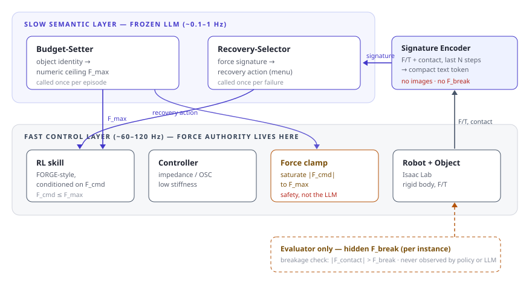
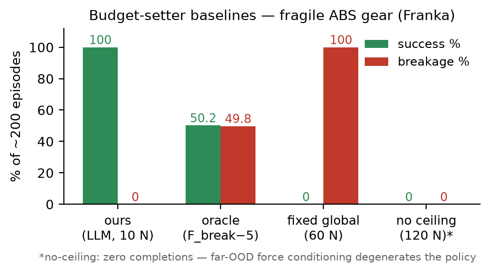
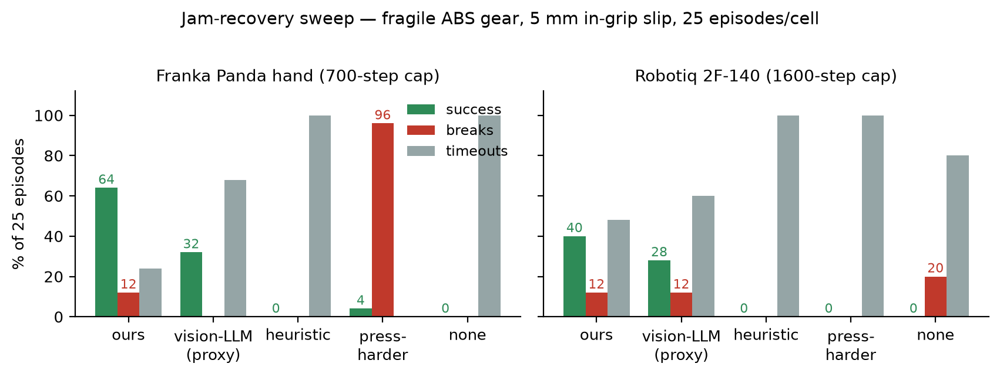

Simulation Study · Project Page
Force-conditioned RL skills (FORGE) can seat tight-clearance assemblies under a commanded force ceiling — but who sets the ceiling, and what do you do when the insertion jams? FORGE-plus answers with a deliberately thin semantic layer: a frozen, text-only LLM reads the object's identity and sets a per-object F_max before the episode; on failure it reads a compact text force signature (peak axial force, net insertion, lateral bias, slip events — no images) and picks a recovery from a fixed menu with no "press harder" option. A hard clamp in the fast loop saturates every commanded force to F_max; the hidden per-episode breaking force F_break is visible only to the evaluator, so the fragility metric cannot be gamed. Everything below is rigid-body simulation (Isaac Lab); breakage is a hidden scalar force threshold; no sim-to-real claim is made.
"Press harder" fails in two entirely different ways on two grippers. On the Franka it is destructive: escalating the ceiling breaks 24 of 25 fragile gears. On the Robotiq 2F-140 it is futile: force escalation never fixes the in-grip tilt, the tilted bore never takes load, so the raised ceiling never engages — 0 successes, 100% timeouts. There, doing nothing is the destructive cell (20% breaks). Neither face is ever the right answer — and only the force-signature chain finds regrasp, the one maneuver that fixes a tilted grip.

ForceClamp run at control rate and own force authority. Three invariants make the evaluation non-circular: F_break is never observed by any learned/LLM component, F_max is immutable during recovery (the selector's keep_F_max_N is overwritten server-side), and a fixed 120 N global cap backstops hallucinated ceilings.All four are RTX renders of real evaluation episodes. The HUD labels every phase LEARNED vs SCRIPTED in real time, with a live contact-force gauge against the budget F_max and the break limit F_brk. Only learned-policy behavior performs the contact-rich work; scripted phases are staging (transport between poses) and the recovery primitives the LLM selects from.
regrasp — two fully physical place-on-table regrasp cycles — then the learned policy seats and releases the gear.F_break ≈ 23 N): the wedge is caught at 16.1 N from the force signature alone, the LLM picks rotate_align at the same F_max, and the learned policy re-inserts, seats, releases, retracts.Robotiq 2F-140, deterministic policy, strict TRUE-seat criterion, hidden per-episode F_break draw. Release success is stricter than insertion: released + standing seated + hand clear, with the gripper opened only by the learned head's own threshold crossing. (Franka clean gate: 200/200, 0 breaks, peak 13.8 N mean.)
| Milestone | Checkpoint | Fragile ABS gear (F_break 38±5 N) | Steel gear |
|---|---|---|---|
| Clean insertion, unified | task1_gear_rq_uni.pt | 256/256, 0 breaks, peak 15.9 N mean / 18.5 p95 | 256/256, 0 breaks, 35.6 / 57.6 |
| + learned release | …_uni_rel.pt | 256/256, 0 breaks, 0 bad releases, 15.7 / 18.5 / 20.1 max | 256/256, 0, 0, 35.7 / 59.3 / 69.6 |
| Full table-pick flow | …_uni_rel_tp.pt | 64/64 smoke, 0 breaks, peak 5.4 N mean / 5.8 max — the gentlest of the project | open (steel table smoke queued) |
The interesting inversion: the unpinned table pick produces far gentler insertions (5.4 N) than the staging pin it replaced (15.9 N) — a real friction pick centers the hub in the pads better than the pin ever did.


regrasp. Caveat: the two panels use different step caps (700 vs 1600 — one 2F-140 regrasp cycle is ~450 steps) and different checkpoints, so compare within a panel, not across. The "vision-LLM" baseline is a menu-sampling proxy for pixels-only reasoners. On steel, the same chain recovers 25/25 with 0 breaks. Recovery episodes press harder than clean ones (23 N mean vs 15.9) — that envelope exposure, not any raised ceiling, accounts for the residual fragile breaks.| Finding | Evidence | Why it matters |
|---|---|---|
| PPO cannot learn 0.4 mm insertion on the 2F-140 | Nine escalating runs, zero seats (all checkpoints kept in the manifest). Action std 0.12 already breaks 40/64 gears while seating 1/320. | The exploration noise needed to search the funnel is already destructive at the funnel's own scale — the exploration–damage trade-off can exclude on-policy RL outright. What works: expert demos → DAgger → BC → weight soup (0.15·bc3 + 0.85·bc7). |
| Tiny-std PPO polish destroys a working policy | Fine-tuning a functioning BC policy at std 0.05 collapsed it from 84% to 0/32 within 25 iterations, at every snapshot. | The 1/std² term in the Gaussian policy gradient amplifies updates as std shrinks — the mean moves far more coarsely than the tolerance allows. |
| Three natural release-head designs fail | Frozen-trunk/all-timesteps learns "open iff already open" (post-open labels are poison); pre-open labels on the frozen trunk hit 27% FPR / 52% FNR (the arm-trained trunk provably discards seat state); trunk fine-tune + distillation pins FNR at 50%. | Winner: an input-skip linear head on the raw observation — the release signal is linearly separable there (255/256 zero-FPR coverage). Threshold after weight folding, drop post-open samples, recollect per staging. |
| The oracle budget breaks half the parts | F_max = F_break−5 → 49.8% breakage (funnel-entry overshoot ~1.5× budget). | Clamping the command does not bound the contact force; budget appropriateness must cover the overshoot distribution. |
Simulation only. No real robot, no sim-to-real claim. Breakage is a hidden scalar threshold on peak contact force in rigid-body physics — no fracture modeling.
Learned vs scripted is exactly as labeled. The force-guided insertion and the release timing are learned; pick/carry staging and the recovery primitives are scripted (the LLM does the selection). The videos label every phase on-screen.
Known caveats are kept. The two sweep panels use different step caps (700 vs 1600) and are not directly comparable; the table-flow recovery result is a 3/5 smoke, not a full cell; the table-pick release gate is a 64-episode smoke; recovery episodes press harder than clean ones (that envelope exposure is the residual fragile breaks); the "vision-LLM" baseline is a menu-sampling proxy, not a full vision pipeline. Every number on this page is copy-checkable against a document in the repository.
FORGE-plus · built on FORGE (RA-L 2025) and Isaac Lab · grippers per GraspGen · force authority is enforced by the fast-loop clamp; the language model only proposes a budget and selects a recovery within it.